Gallery#
The following examples show off the functionality of EMCPy. The examples give reference to what can be done with these collection of tools. Please do not hesitate to issue a pull request to add further examples!
Line Plots#
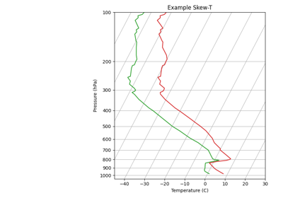
Creating a Skew-T Log-p Plot
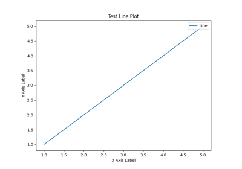
Creating a simple line plot
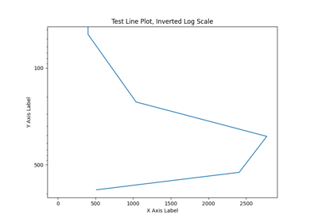
Invert log scale
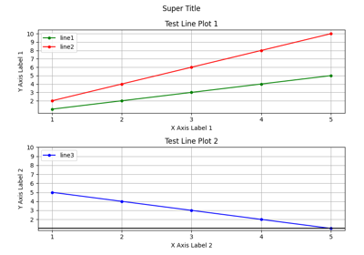
Line Plot Options
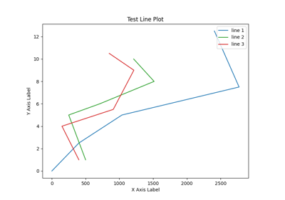
Plotting multiple lines on a single plot
Plotting multiple lines on a single plot
Scatter Plots#
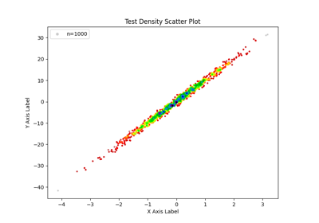
Creating a Density Scatter Plot
Creating a Density Scatter Plot
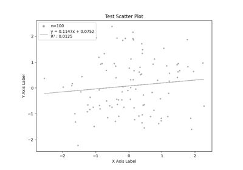
Creating a Scatter Plot with a Regression Line
Creating a Scatter Plot with a Regression Line
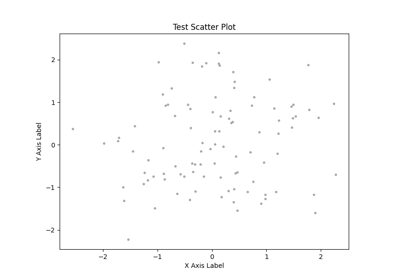
Creating a simple scatter plot
Creating a simple scatter plot
Histogram Plots#
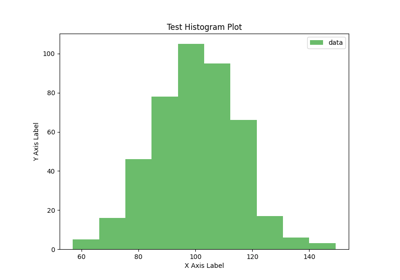
Creating a simple histogram
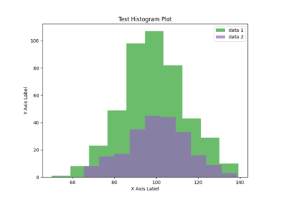
Layered histograms
Map Plots#
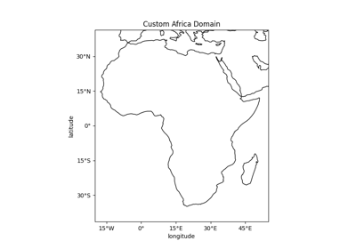
Create a custom map domain
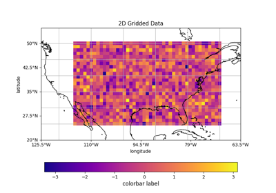
Create a map plot with gridded data
Create a map plot with gridded data
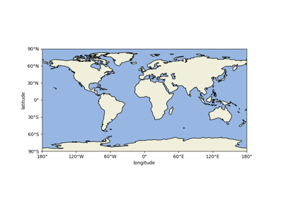
Creating a map plot with no data
Creating a map plot with no data
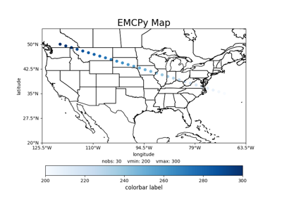
Creating a map plot with scatter data
Creating a map plot with scatter data
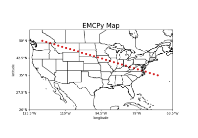
Plotting 2D scatter data on map plot
Plotting 2D scatter data on map plot